02 · Noticias
Lo que vivimos este trimestre
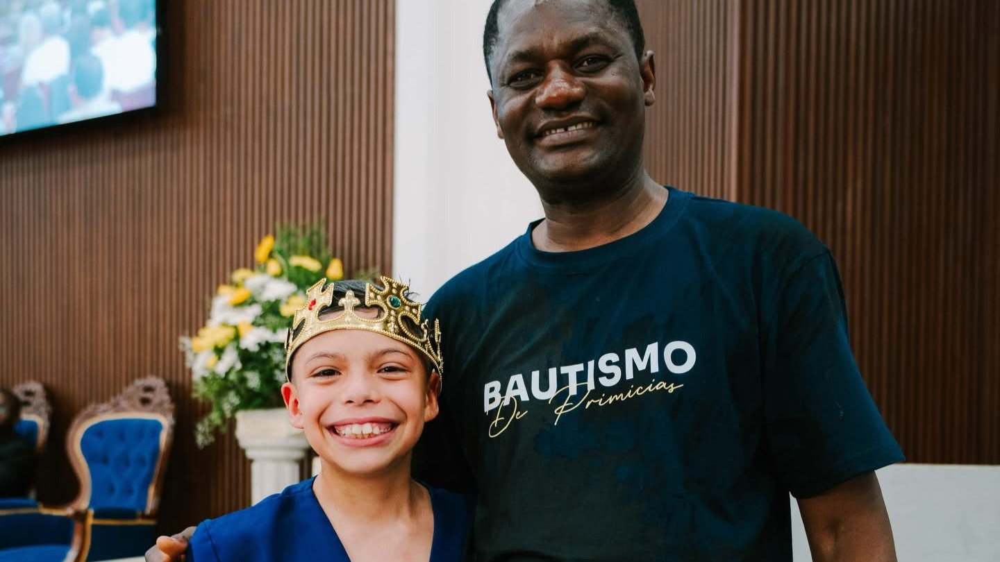
Primicias 2026: Bautismos marcan el inicio del año en la Asociación Metropolitana de Chile
Con gozo y gratitud, la Asociación Metropolitana celebró las primeras decisiones de fe del año. Desde enero, iglesias de toda la asociación reportaron nuevos miembros que sellaron su compromiso con Dios a través del bautismo.
Leer nota completa →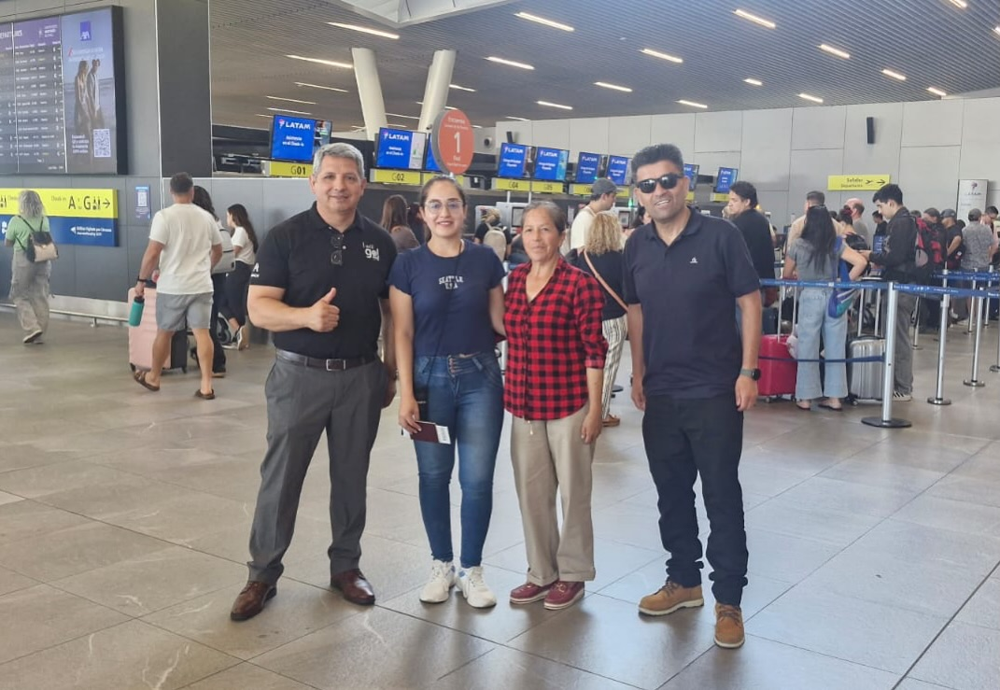
Voluntaria inicia nueva etapa misionera en Argentina
Una joven de la Asociación Metropolitana emprendió su misión voluntaria al país vecino, respondiendo al llamado del servicio adventista internacional.
Leer nota completa →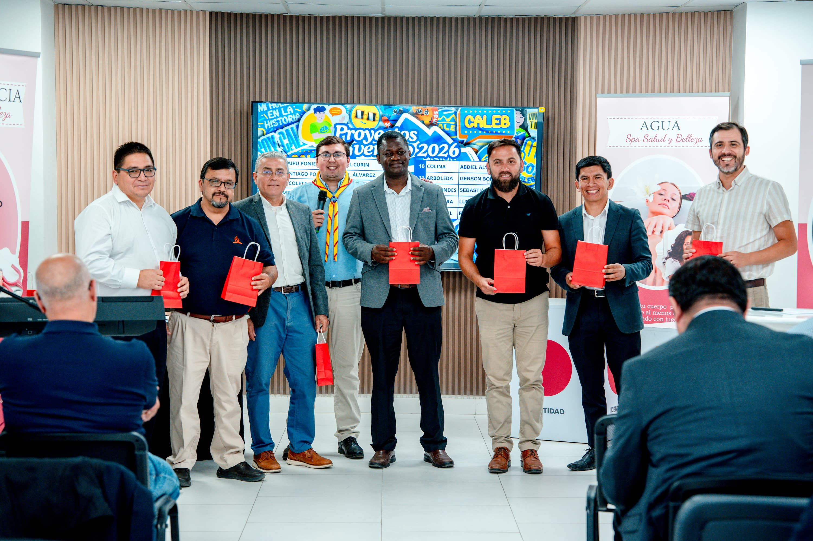
Asamblea Ministerial 2026 proyecta la misión y da la bienvenida a nuevos líderes
La reunión marcó el inicio del año de trabajo ministerial con el ingreso oficial de nuevos pastores y el trazado de metas para la Asociación Metropolitana.
Leer nota completa →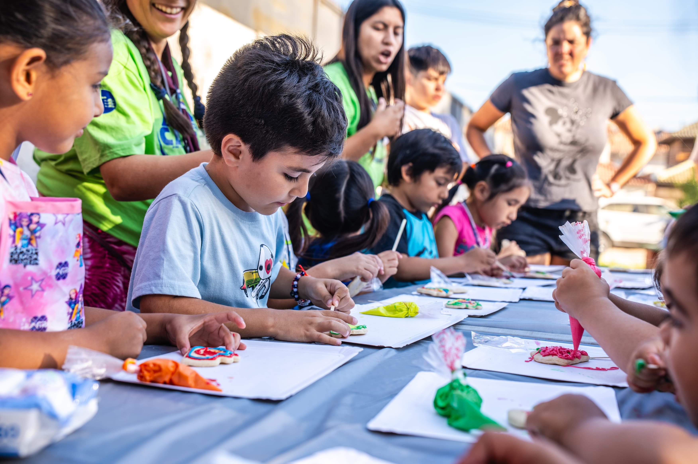
Aventuras en el Desierto: una experiencia que fortalece la fe de las nuevas generaciones
Niños y jóvenes vivieron días de convivencia, fe y aventura en una experiencia pensada para conectarlos profundamente con Dios y con la naturaleza.
Leer nota completa →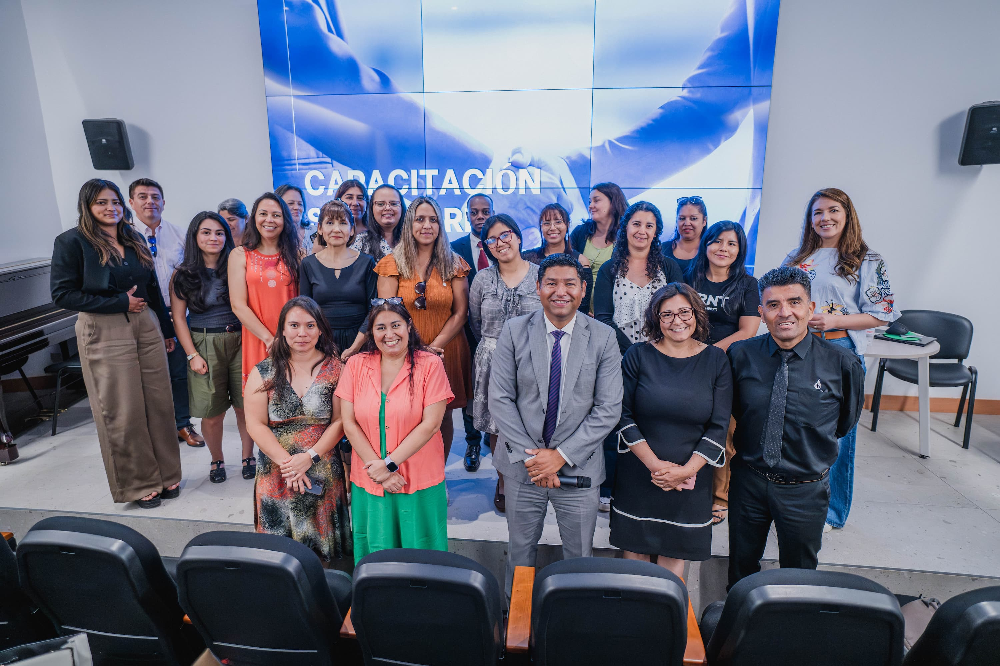
Capacitación a secretarías fortalece la gestión y el servicio en las iglesias
Un espacio de formación práctica para quienes sostienen la administración de las iglesias locales, con herramientas para mejorar la gestión desde el servicio.
Leer nota completa →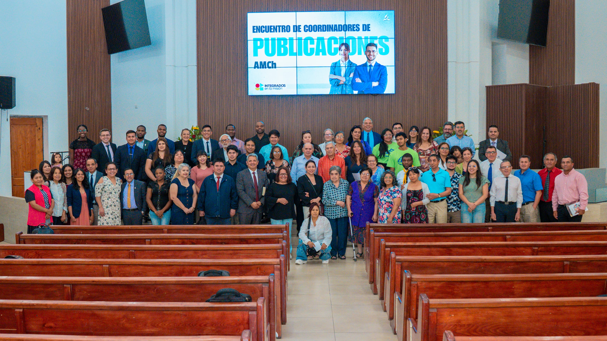
Encuentro de Publicaciones fortalece la misión a través de la literatura
El encuentro reunió a colaboradores del ministerio de publicaciones para proyectar la distribución de literatura evangelística durante el año.
Leer nota completa →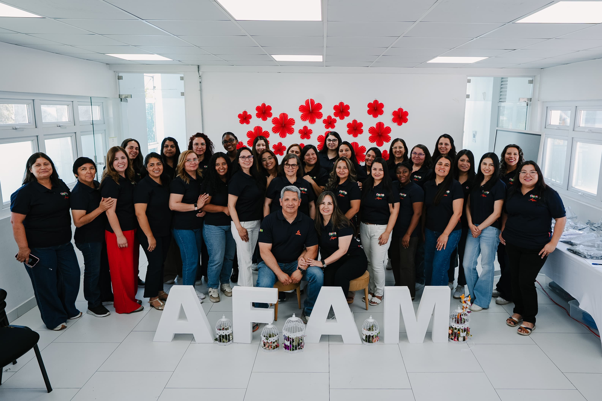
Encuentro AFAM fortalece el acompañamiento y la unidad en el ministerio pastoral
Las esposas de pastores se reunieron en un espacio de comunión, reflexión y apoyo mutuo, renovando el compromiso conjunto con el ministerio pastoral.
Leer nota completa →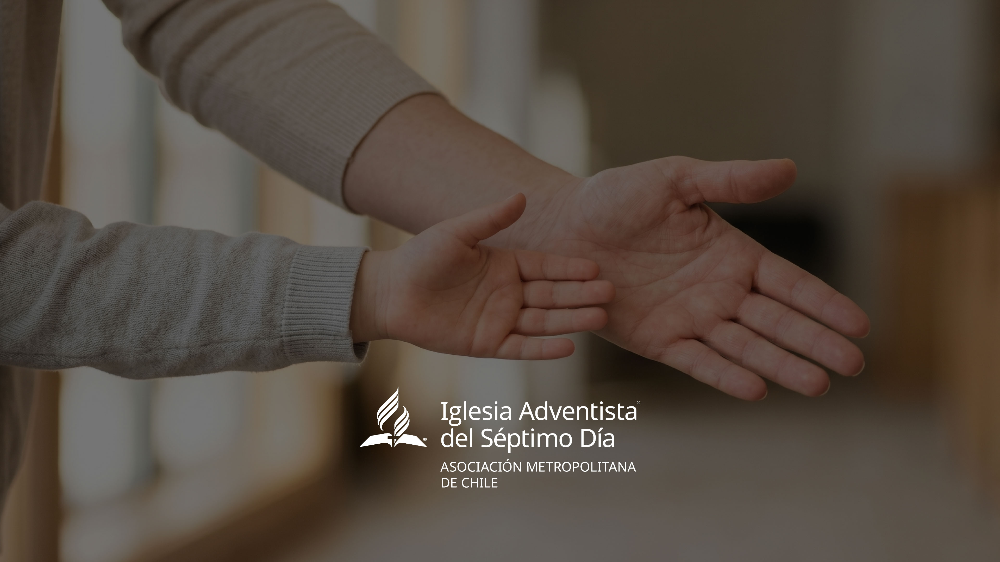
Capacitación fortalece el trabajo del Ministerio Infantil y Recepción en Talagante
Líderes del ministerio infantil de la zona Talagante recibieron herramientas prácticas para el trabajo con niños y para el ministerio de recepción en sus iglesias.
Leer nota completa →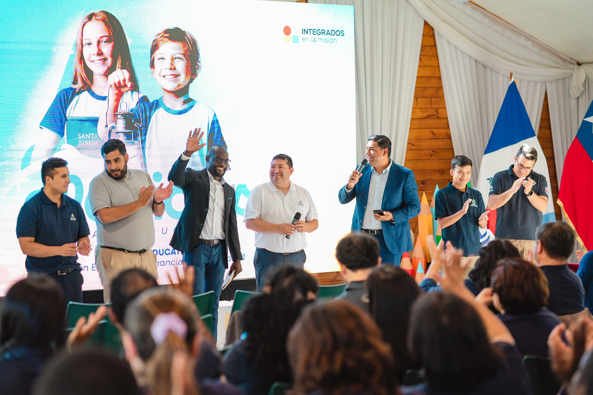
Asamblea Educativa fortalece la identidad y el compromiso del equipo escolar
Docentes y directivos de los colegios de la Fundación Westphal renovaron su compromiso con la educación adventista y proyectaron el año escolar.
Leer nota completa →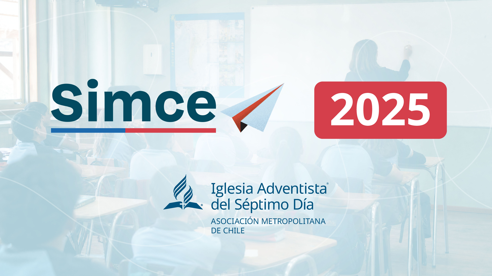
Resultados SIMCE 2025 confirman avances en los colegios de la Fundación Westphal
Los resultados posicionan a los colegios adventistas entre los de mejor rendimiento en sus comunas, superando el promedio regional y nacional.
Leer nota completa →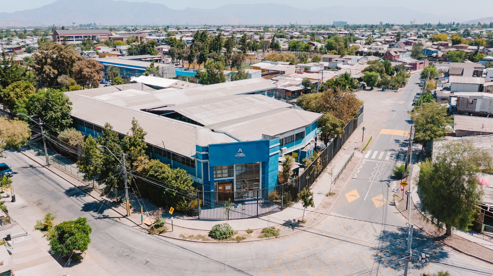
Dos colegios de la Fundación Westphal reciben reconocimiento de Excelencia Académica
El Ministerio de Educación distinguió a dos establecimientos adventistas por sus resultados académicos y su proyecto educativo inclusivo de largo aliento.
Leer nota completa →Más de 1.200 jóvenes se movilizan con propósito en el Día del Joven Adventista
En una jornada de servicio, oración y testimonio, la juventud adventista de la asociación demostró que la misión también es cosa de jóvenes comprometidos.
Leer nota completa →
Ruta del Evangelio Vive: una invitación a conectar y compartir esperanza
Una iniciativa del Ministerio de la Mujer que invita a la comunidad a recorrer la ciudad compartiendo esperanza de forma creativa y cercana.
Leer nota completa →
Asociación Metropolitana da inicio a sus Escuelas de Misión
Con gran convocatoria, arrancaron las Escuelas de Misión: espacios de formación para quienes desean servir como voluntarios adventistas en Chile y el mundo.
Leer nota completa →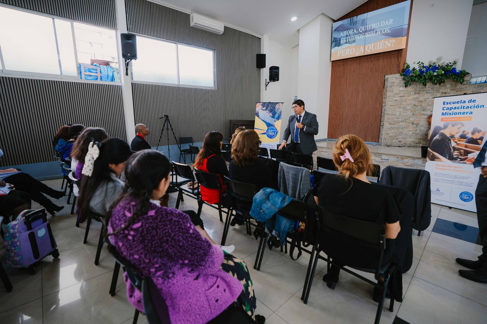
Escuelas Misioneras: una iniciativa que busca movilizar a toda la iglesia
La propuesta busca que cada miembro sea un misionero activo, con herramientas y formación concreta para compartir el Evangelio en su entorno cotidiano.
Leer nota completa →
Asamblea Ministerial fortalece la unidad y proyección del trabajo pastoral
La asamblea de abril consolidó los avances del primer trimestre y trazó el rumbo para el segundo semestre, con foco en la misión integral de la asociación.
Leer nota completa →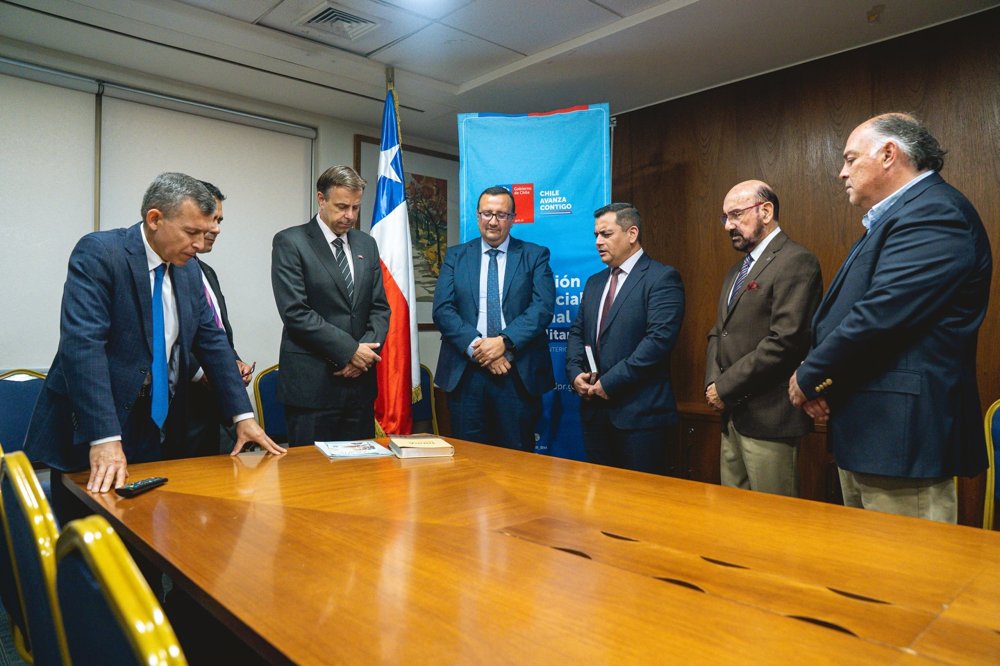
Diálogo y colaboración: Iglesia Adventista se reúne con autoridad regional
Un encuentro que abre puertas para la colaboración entre la iglesia y las autoridades civiles en beneficio de la comunidad del territorio metropolitano.
Leer nota completa →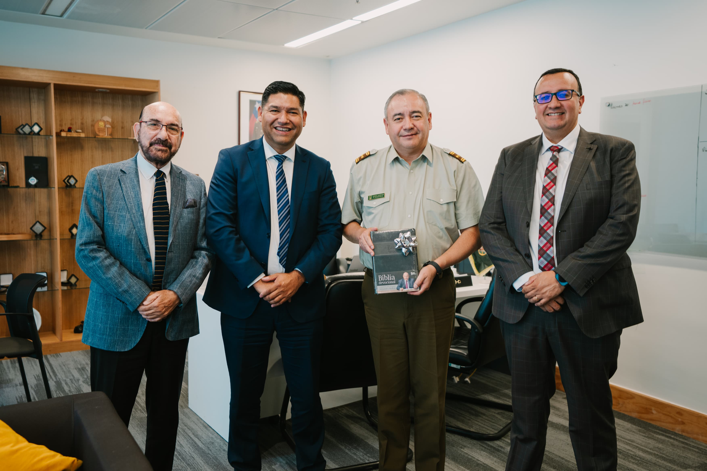
Iglesia Adventista saluda a Carabineros en su 99° aniversario
Como gesto de respeto y valoración a quienes sirven a la comunidad, la Iglesia Adventista participó con distinción en los actos del 99° aniversario de Carabineros de Chile.
Leer nota completa →
Campo Escuela de Líderes reúne a la juventud en torno a la misión
Durante tres días, líderes jóvenes fueron desafiados a reafirmar su identidad en Cristo y renovar su compromiso con la misión en el Cajón del Maipo.
Leer nota completa →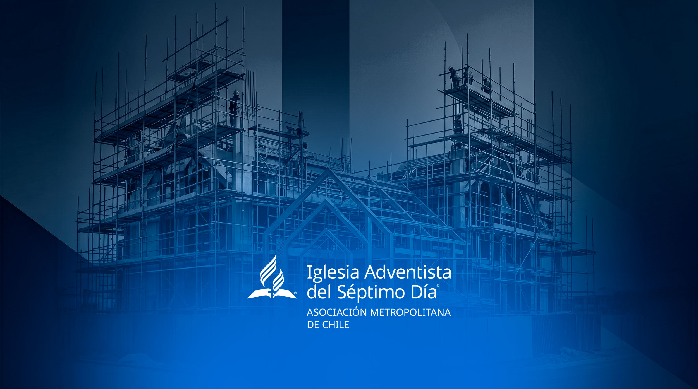
Plantar esperanza en la ciudad: el desafío misionero de la AMCh para el Gran Santiago
35 comunas, 30 iniciativas activas y una visión clara: la Asociación Metropolitana avanza en su proyecto estratégico de plantación de iglesias en el Gran Santiago.
Leer nota completa →